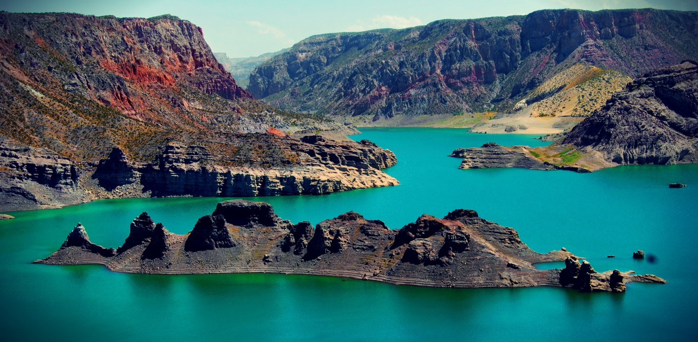
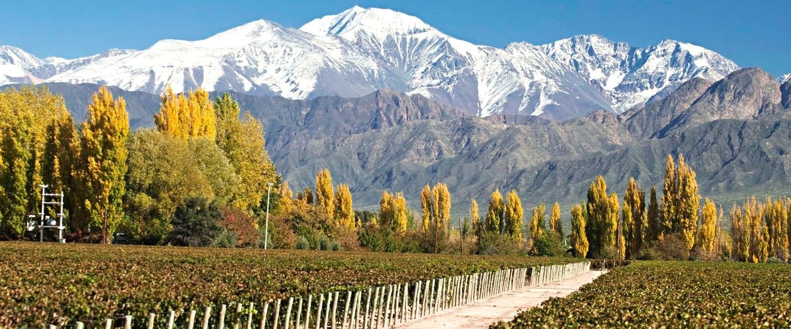

Filtrar por:
Excursiones

Alta Montaña y Puente del Inca
Excursión de día completo por la cordillera de Los Andes.
Excursión de día completo a la cordillera de Los Andes. Se pasará por los valles de Potrerillos y Uspallata, el centro de ski Los Penitentes, el Puente del Inca y el mirador del Cerro Aconcagua, hasta llegar al límite con Chile, en Las Cuevas (3.200 mts).
Incluye:
- Guía bilingüe
- Transporte en modernas unidades
No incluye:
- Almuerzo
Días y horarios: Lunes a domingos, de 07:30 hs a 20:00 hs.
Recomendaciones: Ropa de abrigo, calzado cómodo, protector solar y lentes de sol.
Contratar experiencia por WhatsApp!
Tour de Bodegas
Recorrido de medio día visitando dos bodegas y una fábrica de aceite de oliva.
Tour de vinos de medio día. Se visitarán dos bodegas con degustaciones incluidas, buscando encontrar un contraste entre las mismas. Posteriormente, conocerás una fábrica de aceite de oliva, donde podrás disfrutar de sus productos.
Incluye:
- Entradas y degustaciones
- Guía bilingüe
- Transporte en modernas unidades
No incluye:
- Almuerzo
Días y horarios: Lunes a sábados, de 14:30 hs a 19:00 hs.
Recomendaciones: Calzado cómodo, protector solar y lentes de sol.
Contratar experiencia por WhatsApp!
Cañón del Atuel y San Rafael
Excursión de día completo por el Cañón del Atuel y San Rafael.
Descubre el sur de Mendoza, allí serás sorprendido por la belleza natural del Cañón del Atuel, con una explosión de colores y exóticas formaciones rocosas junto a espejos de agua. Luego de un recorrido por la ciudad de San Rafael regresaremos a la Ciudad de Mendoza.
Incluye:
- Guía bilingüe
- Transporte en modernas unidades
No incluye:
- Almuerzo
- Actividades de rafting y catamarán
Días y horarios: Jueves y domingos, de 07:00 hs a 21:00 hs.
Recomendaciones: Traje de baño, muda de ropa, calzado impermeable, protector solar y lentes de sol.
Contratar experiencia por WhatsApp!
City Tour Mendoza
Recorrido por el casco histórico y principales atractivos de Mendoza.
Explora Mendoza, visitando su casco histórico, plazas principales, Área Fundacional, Paseo "La Alameda", Casa de Gobierno, Parque General San Martín y el mirador del Cerro de la Gloria.
Incluye:
- Guía bilingüe
- Transporte en modernas unidades
No incluye:
- Almuerzo
Días y horarios: Martes, jueves y sábados, de 08:30 hs a 12:30 hs.
Recomendaciones: Calzado cómodo, protector solar y lentes de sol.
Contratar experiencia por WhatsApp!
Reserva Villavicencio
Tour de medio día por la Reserva Natural Villavicencio donde podrás tomar fotos de la quebrada desde la altura y conocer el Casco Histórico del Hotel Villavicencio y sus jardines, de la mano de guías especializados.
Allí podrás tomar fotos de la quebrada de Villavicencio desde la altura; y conocerás el Casco Histórico del Hotel Villavicencio y sus jardines, de la mano de guías.
Incluye:
- Guía bilingüe
- Transporte en modernas unidades
No incluye:
- Entrada y visita a los jardines e inmediaciones del hotel
Días y horarios: Miércoles y sábados, de 08:00 hs a 13:30 hs.
Recomendaciones: Ropa de abrigo, calzado cómodo, protector solar y lentes de sol.
Contratar experiencia por WhatsApp!
Valle de Uco y Cordón del Plata
Recorrido por el Valle de Uco con paradas panorámicas y visita a bodegas.
Disfruta de un día en el Valle de Uco: visitando el punto panorámico del Cristo Rey, el Manzano Histórico, el corredor productivo y realizando un recorrido por una bodega de la zona (degustación no incluida). Pararemos en un restaurante criollo para el almuerzo (no incluido).
Incluye:
- Guía bilingüe
- Transporte en modernas unidades
No incluye:
- Almuerzo
- Entrada a Bodega Atamisque
Días y horarios: Viernes, de 08:00 hs a 18:00 hs.
Recomendaciones: Ropa de abrigo, calzado cómodo, protector solar y lentes de sol.
Contratar experiencia por WhatsApp!Wine Tours

Degustando Mendoza
Degusta de un gin premiado, aceite de oliva de élite y vinos maridados en un recorrido único por Mendoza.
Explora los sabores de Mendoza: degustando el premiado gin de Hilbing Franke, prueba el aceite de oliva extra virgen de Laur, y disfruta de un menú maridado con vinos de excelencia en una prestigiosa bodega.
Incluye:
- Visitas guiadas y degustaciones en destilería y aceitera (o similares)
- Almuerzo con menú de pasos maridado en bodega Trivento, Monte Quieto o similar
- Vehículo de alta gama con chofer profesional
- Salidas de lunes a sábado

Vinos de Altura
Degusta vinos de altura, visitando bodegas exclusivas y disfrutando de un almuerzo maridado en un viaje único por el Valle de Uco.
Explora Valle de Uco en un recorrido único: degustando vinos de alta gama cultivados a más de 1.000 m.s.n.m., visitando bodegas exclusivas y disfrutando de un almuerzo maridado en un entorno mágico.
Incluye:
- Visitas guiadas y degustación en dos bodegas (ej. Andeluna, Familia Blanco, etc.)
- Menú de pasos maridado en una tercera bodega (ej. Andeluna o La Azul)
- Vehículo de alta gama con chofer profesional
- Salidas de lunes a domingo

Velas & Wines
Almuerza en bodega Ojo de Agua con una hermosa vista a los Andes y navega a vela en Potrerillos degustando vinos de garage.
Descubre Luján de Cuyo con un almuerzo maridado en la bodega Ojo de Agua y, luego, navega a vela en Potrerillos mientras degustas vinos de garage.
Incluye:
- Paseo en embarcación a vela con degustación (opcional: tabla de picada)
- Charla técnica
- Vehículo de alta gama con chofer profesional
- Salidas de lunes a viernes

Caminos del Malbec D.O.C.
Descubre el Malbec D.O.C. en bodegas de Luján y disfruta un menú maridado.
Explora Luján de Cuyo tras las huellas del Malbec D.O.C. y disfruta una experiencia vitivinícola y gastronómica única.
Incluye:
- Visitas guiadas y degustación en dos bodegas
- Menú de pasos maridado en una tercera bodega
- Vehículo de alta gama con chofer profesional
- Salidas de lunes a sábado
.svg)